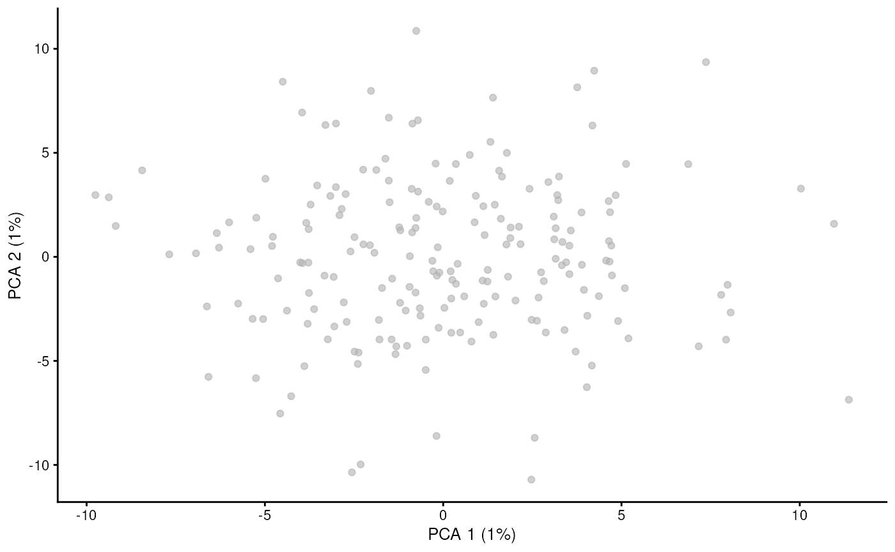
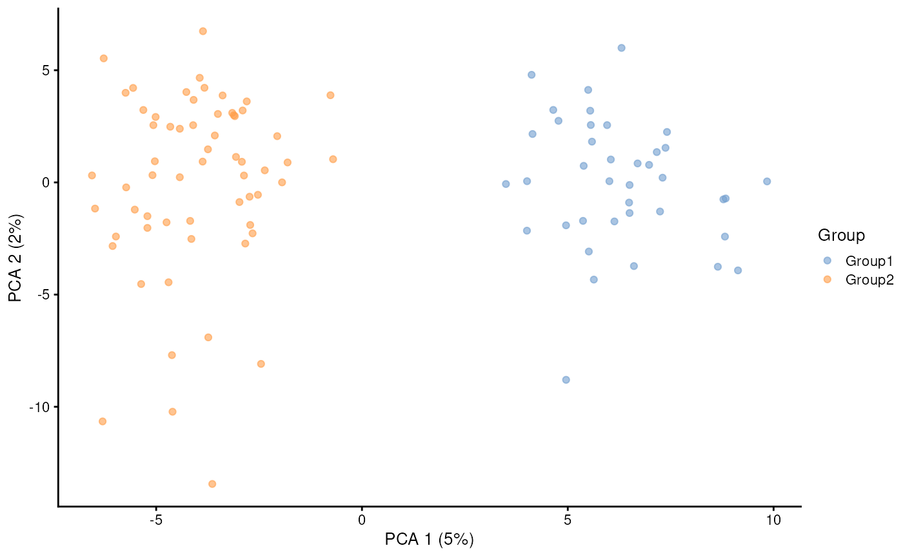
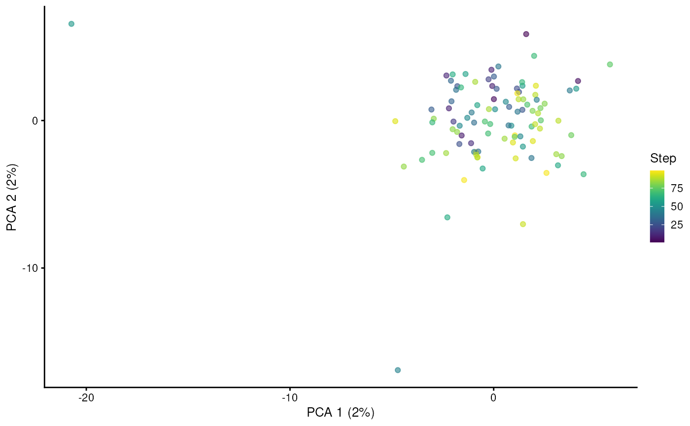
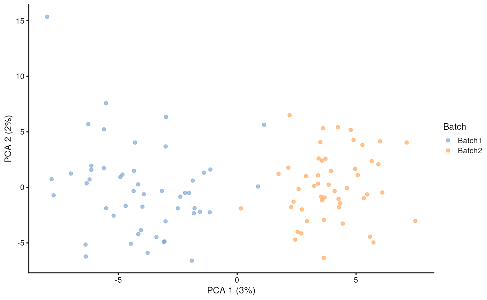
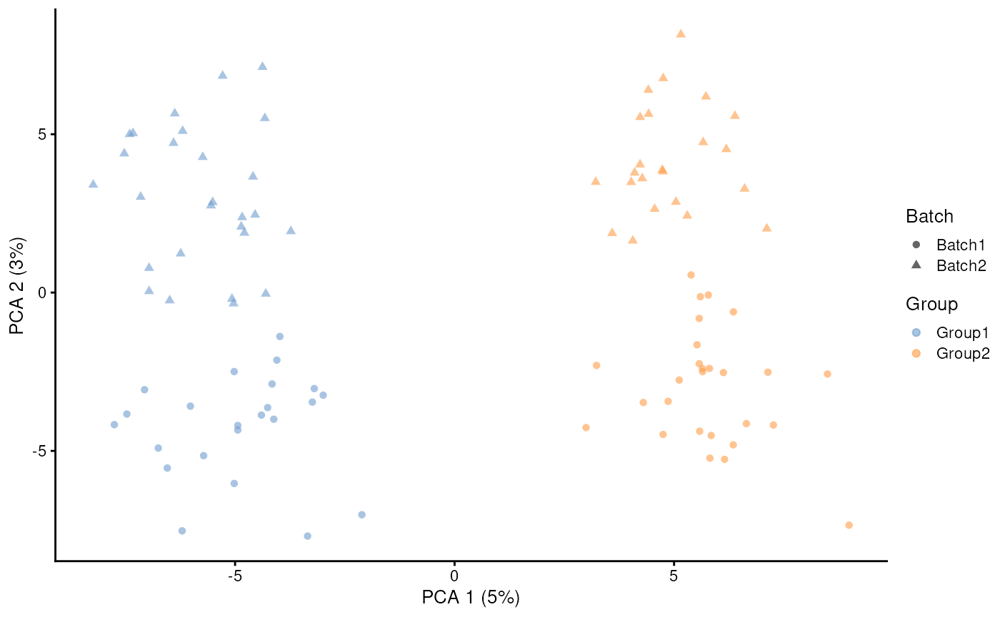
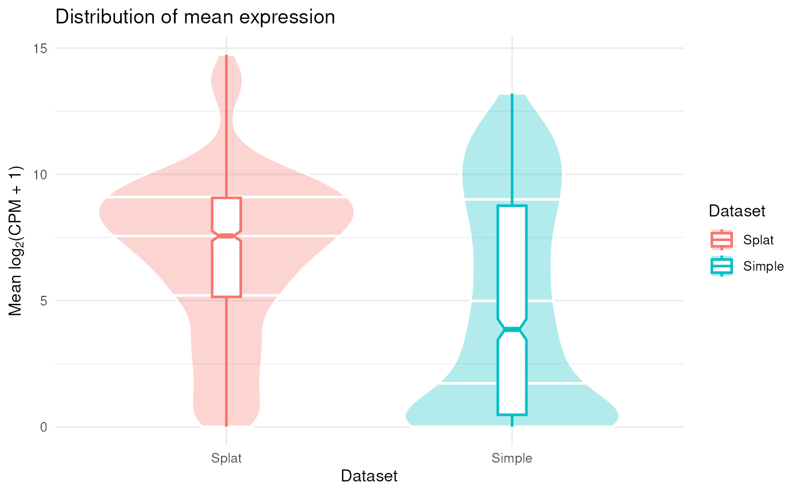
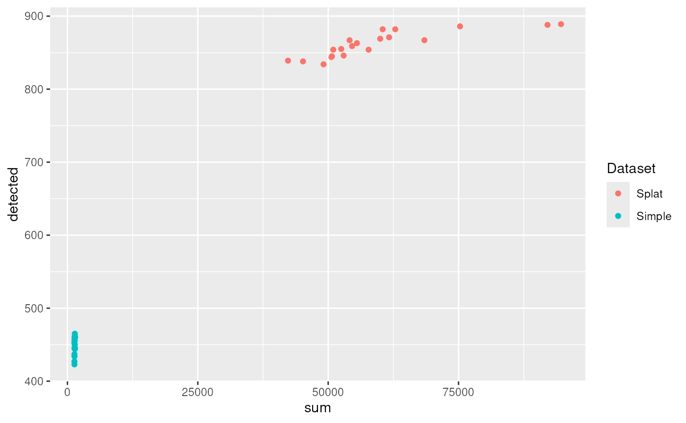
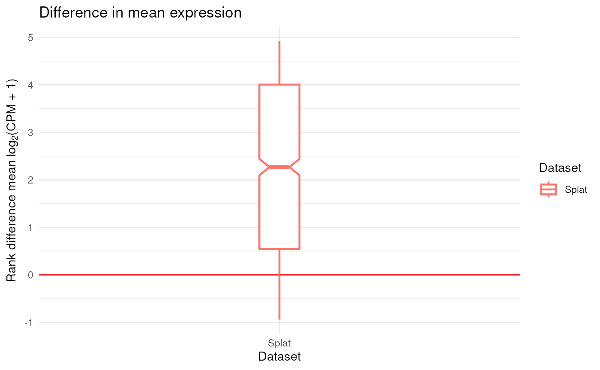
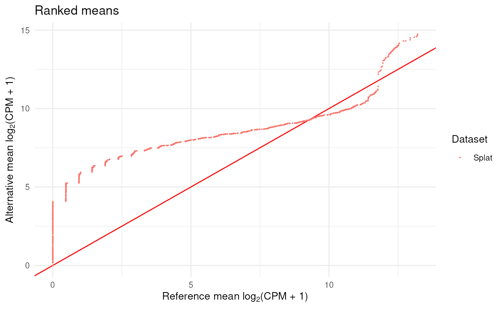

Introduction to Splatter
Luke Zappia
Belinda Phipson
Alicia Oshlack
Last updated: 19 October 2020
Source:vignettes/splatter.Rmd
splatter.RmdWelcome to Splatter! Splatter is an R package for the simple simulation of single-cell RNA sequencing data. This vignette gives an overview and introduction to Splatter’s functionality.
Installation
Splatter can be installed from Bioconductor:
BiocManager::install("splatter")To install the most recent development version from Github use:
BiocManager::install(
"Oshlack/splatter",
dependencies = TRUE,
build_vignettes = TRUE
)Quickstart
Assuming you already have a matrix of count data similar to that you
wish to simulate there are two simple steps to creating a simulated data
set with Splatter. Here is an example a mock dataset generated with the
scater package:
# Load package
suppressPackageStartupMessages({
library(splatter)
library(scater)
})
# Create mock data
set.seed(1)
sce <- mockSCE()
# Estimate parameters from mock data
params <- splatEstimate(sce)
#> NOTE: Library sizes have been found to be normally distributed instead of log-normal. You may want to check this is correct.
# Simulate data using estimated parameters
sim <- splatSimulate(params)
#> Getting parameters...
#> Creating simulation object...
#> Simulating library sizes...
#> Simulating gene means...
#> Simulating BCV...
#> Simulating counts...
#> Simulating dropout (if needed)...
#> Sparsifying assays...
#> Automatically converting to sparse matrices, threshold = 0.95
#> Skipping 'BatchCellMeans': estimated sparse size 1.5 * dense matrix
#> Skipping 'BaseCellMeans': estimated sparse size 1.5 * dense matrix
#> Skipping 'BCV': estimated sparse size 1.5 * dense matrix
#> Skipping 'CellMeans': estimated sparse size 1.5 * dense matrix
#> Skipping 'TrueCounts': estimated sparse size 2.72 * dense matrix
#> Skipping 'counts': estimated sparse size 2.72 * dense matrix
#> Done!These steps will be explained in detail in the following sections but briefly the first step takes a dataset and estimates simulation parameters from it and the second step takes those parameters and simulates a new dataset.
The Splat simulation
Before we look at how we estimate parameters let’s first look at how Splatter simulates data and what those parameters are. We use the term ‘Splat’ to refer to the Splatter’s own simulation and differentiate it from the package itself. The core of the Splat model is a gamma-Poisson distribution used to generate a gene by cell matrix of counts. Mean expression levels for each gene are simulated from a gamma distribution and the Biological Coefficient of Variation is used to enforce a mean-variance trend before counts are simulated from a Poisson distribution. Splat also allows you to simulate expression outlier genes (genes with mean expression outside the gamma distribution) and dropout (random knock out of counts based on mean expression). Each cell is given an expected library size (simulated from a log-normal distribution) that makes it easier to match to a given dataset.
Splat can also simulate differential expression between groups of different types of cells or differentiation paths between different cells types where expression changes in a continuous way. These are described further in the simulating counts section.
The SplatParams object
All the parameters for the Splat simulation are stored in a
SplatParams object. Let’s create a new one and see what it
looks like.
params <- newSplatParams()
params
#> A Params object of class SplatParams
#> Parameters can be (estimable) or [not estimable], 'Default' or 'NOT DEFAULT'
#> Secondary parameters are usually set during simulation
#>
#> Global:
#> (Genes) (Cells) [SEED]
#> 10000 100 694289
#>
#> 29 additional parameters
#>
#> Batches:
#> [Batches] [Batch Cells] [Location] [Scale] [Remove]
#> 1 100 0.1 0.1 FALSE
#>
#> Mean:
#> (Rate) (Shape)
#> 0.3 0.6
#>
#> Library size:
#> (Location) (Scale) (Norm)
#> 11 0.2 FALSE
#>
#> Exprs outliers:
#> (Probability) (Location) (Scale)
#> 0.05 4 0.5
#>
#> Groups:
#> [Groups] [Group Probs]
#> 1 1
#>
#> Diff expr:
#> [Probability] [Down Prob] [Location] [Scale]
#> 0.1 0.5 0.1 0.4
#>
#> BCV:
#> (Common Disp) (DoF)
#> 0.1 60
#>
#> Dropout:
#> [Type] (Midpoint) (Shape)
#> none 0 -1
#>
#> Paths:
#> [From] [Steps] [Skew] [Non-linear] [Sigma Factor]
#> 0 100 0.5 0.1 0.8As well as telling us what type of object we have (“A
Params object of class SplatParams”) and
showing us the values of the parameter this output gives us some extra
information. We can see which parameters can be estimated by the
splatEstimate function (those in parentheses), which can’t
be estimated (those in brackets) and which have been changed from their
default values (those in ALL CAPS). For more details about the
parameters of the Splat simulation refer to the Splat parameters vignette.
Getting and setting
If we want to look at a particular parameter, for example the number
of genes to simulate, we can extract it using the getParam
function:
getParam(params, "nGenes")
#> [1] 10000Alternatively, to give a parameter a new value we can use the
setParam function:
If we want to extract multiple parameters (as a list) or set multiple
parameters we can use the getParams or
setParams functions:
# Set multiple parameters at once (using a list)
params <- setParams(params, update = list(nGenes = 8000, mean.rate = 0.5))
# Extract multiple parameters as a list
getParams(params, c("nGenes", "mean.rate", "mean.shape"))
#> $nGenes
#> [1] 8000
#>
#> $mean.rate
#> [1] 0.5
#>
#> $mean.shape
#> [1] 0.6
# Set multiple parameters at once (using additional arguments)
params <- setParams(params, mean.shape = 0.5, de.prob = 0.2)
params
#> A Params object of class SplatParams
#> Parameters can be (estimable) or [not estimable], 'Default' or 'NOT DEFAULT'
#> Secondary parameters are usually set during simulation
#>
#> Global:
#> (GENES) (Cells) [SEED]
#> 8000 100 694289
#>
#> 29 additional parameters
#>
#> Batches:
#> [Batches] [Batch Cells] [Location] [Scale] [Remove]
#> 1 100 0.1 0.1 FALSE
#>
#> Mean:
#> (RATE) (SHAPE)
#> 0.5 0.5
#>
#> Library size:
#> (Location) (Scale) (Norm)
#> 11 0.2 FALSE
#>
#> Exprs outliers:
#> (Probability) (Location) (Scale)
#> 0.05 4 0.5
#>
#> Groups:
#> [Groups] [Group Probs]
#> 1 1
#>
#> Diff expr:
#> [PROBABILITY] [Down Prob] [Location] [Scale]
#> 0.2 0.5 0.1 0.4
#>
#> BCV:
#> (Common Disp) (DoF)
#> 0.1 60
#>
#> Dropout:
#> [Type] (Midpoint) (Shape)
#> none 0 -1
#>
#> Paths:
#> [From] [Steps] [Skew] [Non-linear] [Sigma Factor]
#> 0 100 0.5 0.1 0.8The parameters with have changed are now shown in ALL CAPS to indicate that they been changed form the default.
We can also set parameters directly when we call
newSplatParams:
params <- newSplatParams(lib.loc = 12, lib.scale = 0.6)
getParams(params, c("lib.loc", "lib.scale"))
#> $lib.loc
#> [1] 12
#>
#> $lib.scale
#> [1] 0.6Estimating parameters
Splat allows you to estimate many of it’s parameters from a data set
containing counts using the splatEstimate function.
# Get the mock counts matrix
counts <- counts(sce)
# Check that counts is an integer matrix
class(counts)
#> [1] "matrix" "array"
typeof(counts)
#> [1] "double"
# Check the dimensions, each row is a gene, each column is a cell
dim(counts)
#> [1] 2000 200
# Show the first few entries
counts[1:5, 1:5]
#> Cell_001 Cell_002 Cell_003 Cell_004 Cell_005
#> Gene_0001 0 5 7 276 50
#> Gene_0002 12 0 0 0 0
#> Gene_0003 97 292 58 64 541
#> Gene_0004 0 0 0 170 19
#> Gene_0005 105 123 174 565 1061
params <- splatEstimate(counts)
#> NOTE: Library sizes have been found to be normally distributed instead of log-normal. You may want to check this is correct.Here we estimated parameters from a counts matrix but
splatEstimate can also take a
SingleCellExperiment object. The estimation process has the
following steps:
- Mean parameters are estimated by fitting a gamma distribution to the mean expression levels.
- Library size parameters are estimated by fitting a log-normal distribution to the library sizes.
- Expression outlier parameters are estimated by determining the number of outliers and fitting a log-normal distribution to their difference from the median.
- BCV parameters are estimated using the
estimateDispfunction from theedgeRpackage. - Dropout parameters are estimated by checking if dropout is present and fitting a logistic function to the relationship between mean expression and proportion of zeros.
For more details of the estimation procedures see
?splatEstimate.
Simulating counts
Once we have a set of parameters we are happy with we can use
splatSimulate to simulate counts. If we want to make small
adjustments to the parameters we can provide them as additional
arguments, alternatively if we don’t supply any parameters the defaults
will be used:
sim <- splatSimulate(params, nGenes = 1000)
#> Getting parameters...
#> Creating simulation object...
#> Simulating library sizes...
#> Simulating gene means...
#> Simulating BCV...
#> Simulating counts...
#> Simulating dropout (if needed)...
#> Sparsifying assays...
#> Automatically converting to sparse matrices, threshold = 0.95
#> Skipping 'BatchCellMeans': estimated sparse size 1.5 * dense matrix
#> Skipping 'BaseCellMeans': estimated sparse size 1.5 * dense matrix
#> Skipping 'BCV': estimated sparse size 1.5 * dense matrix
#> Skipping 'CellMeans': estimated sparse size 1.5 * dense matrix
#> Skipping 'TrueCounts': estimated sparse size 2.8 * dense matrix
#> Skipping 'counts': estimated sparse size 2.8 * dense matrix
#> Done!
sim
#> class: SingleCellExperiment
#> dim: 1000 200
#> metadata(1): Params
#> assays(6): BatchCellMeans BaseCellMeans ... TrueCounts counts
#> rownames(1000): Gene1 Gene2 ... Gene999 Gene1000
#> rowData names(4): Gene BaseGeneMean OutlierFactor GeneMean
#> colnames(200): Cell1 Cell2 ... Cell199 Cell200
#> colData names(3): Cell Batch ExpLibSize
#> reducedDimNames(0):
#> mainExpName: NULL
#> altExpNames(0):Looking at the output of splatSimulate we can see that
sim is SingleCellExperiment object with 1000
features (genes) and 200 samples (cells). The main part of this object
is a features by samples matrix containing the simulated counts
(accessed using counts), although it can also hold other
expression measures such as FPKM or TPM. Additionally a
SingleCellExperiment contains phenotype information about
each cell (accessed using colData) and feature information
about each gene (accessed using rowData). Splatter uses
these slots, as well as assays, to store information about
the intermediate values of the simulation.
# Access the counts
counts(sim)[1:5, 1:5]
#> Cell1 Cell2 Cell3 Cell4 Cell5
#> Gene1 5 211 58 182 655
#> Gene2 333 813 133 6 268
#> Gene3 9 11 4 154 29
#> Gene4 5 0 0 2 15
#> Gene5 32 79 196 113 163
# Information about genes
head(rowData(sim))
#> DataFrame with 6 rows and 4 columns
#> Gene BaseGeneMean OutlierFactor GeneMean
#> <character> <numeric> <numeric> <numeric>
#> Gene1 Gene1 137.982596 1 137.982596
#> Gene2 Gene2 101.114437 1 101.114437
#> Gene3 Gene3 30.340638 1 30.340638
#> Gene4 Gene4 0.893224 1 0.893224
#> Gene5 Gene5 30.133545 1 30.133545
#> Gene6 Gene6 137.105231 1 137.105231
# Information about cells
head(colData(sim))
#> DataFrame with 6 rows and 3 columns
#> Cell Batch ExpLibSize
#> <character> <character> <numeric>
#> Cell1 Cell1 Batch1 347136
#> Cell2 Cell2 Batch1 360873
#> Cell3 Cell3 Batch1 348761
#> Cell4 Cell4 Batch1 337947
#> Cell5 Cell5 Batch1 373123
#> Cell6 Cell6 Batch1 351380
# Gene by cell matrices
names(assays(sim))
#> [1] "BatchCellMeans" "BaseCellMeans" "BCV" "CellMeans"
#> [5] "TrueCounts" "counts"
# Example of cell means matrix
assays(sim)$CellMeans[1:5, 1:5]
#> Cell1 Cell2 Cell3 Cell4 Cell5
#> Gene1 4.314912 202.5594718 56.343203 165.560795 638.421087
#> Gene2 336.005603 787.6179412 144.077374 13.163174 285.716519
#> Gene3 14.598820 15.1382574 4.257755 159.178462 26.630858
#> Gene4 3.835805 0.2021945 0.198304 2.973771 9.221402
#> Gene5 40.919228 88.4381533 189.050195 117.404168 162.212366An additional (big) advantage of outputting a
SingleCellExperiment is that we get immediate access to
other analysis packages, such as the plotting functions in
scater. For example we can make a PCA plot:
# Use scater to calculate logcounts
sim <- logNormCounts(sim)
# Plot PCA
sim <- runPCA(sim)
plotPCA(sim)
(NOTE: Your values and plots may look different as the simulation is random and produces different results each time it is run.)
For more details about the SingleCellExperiment object
refer to the vignette.
For information about what you can do with scater refer to
the scater documentation and vignette.
The splatSimulate function outputs the following
additional information about the simulation:
-
Cell information (
colData)-
Cell- Unique cell identifier. -
Group- The group or path the cell belongs to. -
ExpLibSize- The expected library size for that cell. -
Step(paths only) - How far along the path each cell is.
-
-
Gene information (
rowData)-
Gene- Unique gene identifier. -
BaseGeneMean- The base expression level for that gene. -
OutlierFactor- Expression outlier factor for that gene (1 is not an outlier). -
GeneMean- Expression level after applying outlier factors. -
DEFac[Group]- The differential expression factor for each gene in a particular group (1 is not differentially expressed). -
GeneMean[Group]- Expression level of a gene in a particular group after applying differential expression factors.
-
-
Gene by cell information (
assays)-
BaseCellMeans- The expression of genes in each cell adjusted for expected library size. -
BCV- The Biological Coefficient of Variation for each gene in each cell. -
CellMeans- The expression level of genes in each cell adjusted for BCV. -
TrueCounts- The simulated counts before dropout. -
Dropout- Logical matrix showing which counts have been dropped in which cells.
-
Values that have been added by Splatter are named using
UpperCamelCase to separate them from the
underscore_naming used by scater and other
packages. For more information on the simulation see
?splatSimulate.
Simulating groups
So far we have only simulated a single population of cells but often
we are interested in investigating a mixed population of cells and
looking to see what cell types are present or what differences there are
between them. Splatter is able to simulate these situations by changing
the method argument Here we are going to simulate two
groups, by specifying the group.prob parameter and setting
the method parameter to "groups":
(NOTE: We have also set the verbose
argument to FALSE to stop Splatter printing progress
messages.)
sim.groups <- splatSimulate(
group.prob = c(0.5, 0.5),
method = "groups",
verbose = FALSE
)
sim.groups <- logNormCounts(sim.groups)
sim.groups <- runPCA(sim.groups)
plotPCA(sim.groups, colour_by = "Group")
As we have set both the group probabilities to 0.5 we should get
approximately equal numbers of cells in each group (around 50 in this
case). If we wanted uneven groups we could set group.prob
to any set of probabilities that sum to 1.
Simulating paths
The other situation that is often of interest is a differentiation
process where one cell type is changing into another. Splatter
approximates this process by simulating a series of steps between two
groups and randomly assigning each cell to a step. We can create this
kind of simulation using the "paths" method.
sim.paths <- splatSimulate(
de.prob = 0.2,
nGenes = 1000,
method = "paths",
verbose = FALSE
)
sim.paths <- logNormCounts(sim.paths)
sim.paths <- runPCA(sim.paths)
plotPCA(sim.paths, colour_by = "Step")
Here the colours represent the “step” of each cell or how far along the differentiation path it is. We can see that the cells with dark colours are more similar to the originating cell type and the light coloured cells are closer to the final, differentiated, cell type. By setting additional parameters it is possible to simulate more complex process (for example multiple mature cell types from a single progenitor).
Batch effects
Another factor that is important in the analysis of any sequencing experiment are batch effects, technical variation that is common to a set of samples processed at the same time. We apply batch effects by telling Splatter how many cells are in each batch:
sim.batches <- splatSimulate(batchCells = c(50, 50), verbose = FALSE)
sim.batches <- logNormCounts(sim.batches)
sim.batches <- runPCA(sim.batches)
plotPCA(sim.batches, colour_by = "Batch")
This looks at lot like when we simulated groups and that is because the process is very similar. The difference is that batch effects are applied to all genes, not just those that are differentially expressed, and the effects are usually smaller. By combining groups and batches we can simulate both unwanted variation that we aren’t interested in (batch) and the wanted variation we are looking for (group):
sim.groups <- splatSimulate(
batchCells = c(50, 50),
group.prob = c(0.5, 0.5),
method = "groups",
verbose = FALSE
)
sim.groups <- logNormCounts(sim.groups)
sim.groups <- runPCA(sim.groups)
plotPCA(sim.groups, shape_by = "Batch", colour_by = "Group")
Here we see that the effects of the group (first component) are stronger than the batch effects (second component) but by adjusting the parameters we could made the batch effects dominate.
Convenience functions
Each of the Splatter simulation methods has it’s own convenience
function. To simulate a single population use
splatSimulateSingle() (equivalent to
splatSimulate(method = "single")), to simulate groups use
splatSimulateGroups() (equivalent to
splatSimulate(method = "groups")) or to simulate paths use
splatSimulatePaths() (equivalent to
splatSimulate(method = "paths")).
splatPop: Simulating populations
splatPop uses the splat model to simulate single cell count data
across a population with relationship structure including expression
quantitative loci (eQTL) effects. The major addition in splatPop is the
splatPopSimulateMeans function, which simulates gene means
for each gene for each individual using parameters estimated from real
data. These simulated means are then used as input
tosplatPopSimulateSC, which is essentially a wrapper around
the base splatSimulate. For more information on generating
population scale single-cell count data, see the splatPop vignette.
Other simulations
As well as it’s own Splat simulation method the Splatter package
contains implementations of other single-cell RNA-seq simulations that
have been published or wrappers around simulations included in other
packages. To see all the available simulations run the
listSims() function:
listSims()
#> Splatter currently contains 15 simulations
#>
#> Splat (splat)
#> DOI: 10.1186/s13059-017-1305-0 GitHub: Oshlack/splatter Dependencies:
#> The Splat simulation generates means from a gamma distribution, adjusts them for BCV and generates counts from a gamma-poisson. Dropout and batch effects can be optionally added.
#>
#> Splat Single (splatSingle)
#> DOI: 10.1186/s13059-017-1305-0 GitHub: Oshlack/splatter Dependencies:
#> The Splat simulation with a single population.
#>
#> Splat Groups (splatGroups)
#> DOI: 10.1186/s13059-017-1305-0 GitHub: Oshlack/splatter Dependencies:
#> The Splat simulation with multiple groups. Each group can have it's own differential expression probability and fold change distribution.
#>
#> Splat Paths (splatPaths)
#> DOI: 10.1186/s13059-017-1305-0 GitHub: Oshlack/splatter Dependencies:
#> The Splat simulation with differentiation paths. Each path can have it's own length, skew and probability. Genes can change in non-linear ways.
#>
#> Kersplat (kersplat)
#> DOI: GitHub: Oshlack/splatter Dependencies: scuttle, igraph
#> The Kersplat simulation extends the Splat model by adding a gene network, more complex cell structure, doublets and empty cells (Experimental).
#>
#> splatPop (splatPop)
#> DOI: 10.1186/s13059-021-02546-1 GitHub: Oshlack/splatter Dependencies: VariantAnnotation, preprocessCore
#> The splatPop simulation enables splat simulations to be generated for multiple individuals in a population, accounting for correlation structure by simulating expression quantitative trait loci (eQTL).
#>
#> Simple (simple)
#> DOI: 10.1186/s13059-017-1305-0 GitHub: Oshlack/splatter Dependencies:
#> A simple simulation with gamma means and negative binomial counts.
#>
#> Lun (lun)
#> DOI: 10.1186/s13059-016-0947-7 GitHub: MarioniLab/Deconvolution2016 Dependencies:
#> Gamma distributed means and negative binomial counts. Cells are given a size factor and differential expression can be simulated with fixed fold changes.
#>
#> Lun 2 (lun2)
#> DOI: 10.1093/biostatistics/kxw055 GitHub: MarioniLab/PlateEffects2016 Dependencies: scran, scuttle, lme4, pscl, limSolve
#> Negative binomial counts where the means and dispersions have been sampled from a real dataset. The core feature of the Lun 2 simulation is the addition of plate effects. Differential expression can be added between two groups of plates and optionally a zero-inflated negative-binomial can be used.
#>
#> scDD (scDD)
#> DOI: 10.1186/s13059-016-1077-y GitHub: kdkorthauer/scDD Dependencies: scDD
#> The scDD simulation samples a given dataset and can simulate differentially expressed and differentially distributed genes between two conditions.
#>
#> BASiCS (BASiCS)
#> DOI: 10.1371/journal.pcbi.1004333 GitHub: catavallejos/BASiCS Dependencies: BASiCS
#> The BASiCS simulation is based on a bayesian model used to deconvolve biological and technical variation and includes spike-ins and batch effects.
#>
#> mfa (mfa)
#> DOI: 10.12688/wellcomeopenres.11087.1 GitHub: kieranrcampbell/mfa Dependencies: mfa
#> The mfa simulation produces a bifurcating pseudotime trajectory. This can optionally include genes with transient changes in expression and added dropout.
#>
#> PhenoPath (pheno)
#> DOI: 10.1038/s41467-018-04696-6 GitHub: kieranrcampbell/phenopath Dependencies: phenopath
#> The PhenoPath simulation produces a pseudotime trajectory with different types of genes.
#>
#> ZINB-WaVE (zinb)
#> DOI: 10.1038/s41467-017-02554-5 GitHub: drisso/zinbwave Dependencies: zinbwave
#> The ZINB-WaVE simulation simulates counts from a sophisticated zero-inflated negative-binomial distribution including cell and gene-level covariates.
#>
#> SparseDC (sparseDC)
#> DOI: 10.1093/nar/gkx1113 GitHub: cran/SparseDC Dependencies: SparseDC
#> The SparseDC simulation simulates a set of clusters across two conditions, where some clusters may be present in only one condition.Each simulation has it’s own prefix which gives the name of the
functions associated with that simulation. For example the prefix for
the simple simulation is simple so it would store it’s
parameters in a SimpleParams object that can be created
using newSimpleParams() or estimated from real data using
simpleEstimate(). To simulate data using that simulation
you would use simpleSimulate(). Each simulation returns a
SingleCellExperiment object with intermediate values
similar to that returned by splatSimulate(). For more
detailed information on each simulation see the appropriate help page
(eg. ?simpleSimulate for information on how the simple
simulation works or ? lun2Estimate for details of how the
Lun 2 simulation estimates parameters) or refer to the appropriate paper
or package.
Other expression values
Splatter is designed to simulate count data but some analysis methods
expect other expression values, particularly length-normalised values
such as TPM or FPKM. The scater package has functions for
adding these values to a SingleCellExperiment object but
they require a length for each gene. The addGeneLengths
function can be used to simulate these lengths:
sim <- simpleSimulate(verbose = FALSE)
sim <- addGeneLengths(sim)
head(rowData(sim))
#> DataFrame with 6 rows and 3 columns
#> Gene GeneMean Length
#> <character> <numeric> <numeric>
#> Gene1 Gene1 2.65458e-04 1398
#> Gene2 Gene2 2.27249e-01 1036
#> Gene3 Gene3 1.47678e-01 5511
#> Gene4 Gene4 1.00810e+01 1193
#> Gene5 Gene5 8.93350e-02 3250
#> Gene6 Gene6 1.51442e+00 655We can then use scater to calculate TPM:
tpm(sim) <- calculateTPM(sim, rowData(sim)$Length)
tpm(sim)[1:5, 1:5]
#> 5 x 5 sparse Matrix of class "dgCMatrix"
#> Cell1 Cell2 Cell3 Cell4 Cell5
#> Gene1 . . . . .
#> Gene2 . . . . 150.6985
#> Gene3 . . . . .
#> Gene4 918.5844 656.8136 1395.598 1193.577 1046.9317
#> Gene5 . . . . .The default method used by addGeneLengths to simulate
lengths is to generate values from a log-normal distribution which are
then rounded to give an integer length. The parameters for this
distribution are based on human protein coding genes but can be adjusted
if needed (for example for other species). Alternatively lengths can be
sampled from a provided vector (see ?addGeneLengths for
details and an example).
Reducing simulation size
The simulations in Splatter include many of the intermediate values
used during the simulation process as part of the final output. These
values can be useful for evaluating various things but if you don’t need
them they can greatly increase the size of the object. If you would like
to reduce the size of your simulation output you can use the
minimiseSCE() function:
sim <- splatSimulate()
#> Getting parameters...
#> Creating simulation object...
#> Simulating library sizes...
#> Simulating gene means...
#> Simulating BCV...
#> Simulating counts...
#> Simulating dropout (if needed)...
#> Sparsifying assays...
#> Automatically converting to sparse matrices, threshold = 0.95
#> Skipping 'BatchCellMeans': estimated sparse size 1.5 * dense matrix
#> Skipping 'BaseCellMeans': estimated sparse size 1.5 * dense matrix
#> Skipping 'BCV': estimated sparse size 1.5 * dense matrix
#> Skipping 'CellMeans': estimated sparse size 1.49 * dense matrix
#> Skipping 'TrueCounts': estimated sparse size 1.65 * dense matrix
#> Skipping 'counts': estimated sparse size 1.65 * dense matrix
#> Done!
minimiseSCE(sim)
#> Minimising SingleCellExperiment...
#> Original size: 43.9 Mb
#> Removing all rowData columns
#> Removing all colData columns
#> Removing all metadata items
#> Keeping 1 assays: counts
#> Removing 5 assays: BatchCellMeans, BaseCellMeans, BCV, CellMeans, TrueCounts
#> Sparsifying assays...
#> Automatically converting to sparse matrices, threshold = 0.95
#> Skipping 'counts': estimated sparse size 1.65 * dense matrix
#> Minimised size: 5.3 Mb (12% of original)
#> class: SingleCellExperiment
#> dim: 10000 100
#> metadata(0):
#> assays(1): counts
#> rownames(10000): Gene1 Gene2 ... Gene9999 Gene10000
#> rowData names(0):
#> colnames(100): Cell1 Cell2 ... Cell99 Cell100
#> colData names(0):
#> reducedDimNames(0):
#> mainExpName: NULL
#> altExpNames(0):By default it will remove everything in rowData(sce),
colData(sce) and metadata(sce) and all assays
except for counts. If there are other things you would like
to keep you can specify them in the various keep arguments.
Giving a character will keep only columns/items with those names or you
can use TRUE to keep everything in that slot.
minimiseSCE(sim,
rowData.keep = "Gene",
colData.keep = c("Cell", "Batch"),
metadata.keep = TRUE
)
#> Minimising SingleCellExperiment...
#> Original size: 43.9 Mb
#> Keeping 1 rowData columns: Gene
#> Removing 3 rowData columns: BaseGeneMean, OutlierFactor, GeneMean
#> Keeping 2 colData columns: Cell, Batch
#> Removing 1 colData columns: ExpLibSize
#> Keeping 1 assays: counts
#> Removing 5 assays: BatchCellMeans, BaseCellMeans, BCV, CellMeans, TrueCounts
#> Sparsifying assays...
#> Automatically converting to sparse matrices, threshold = 0.95
#> Skipping 'counts': estimated sparse size 1.65 * dense matrix
#> Minimised size: 5.9 Mb (14% of original)
#> class: SingleCellExperiment
#> dim: 10000 100
#> metadata(1): Params
#> assays(1): counts
#> rownames(10000): Gene1 Gene2 ... Gene9999 Gene10000
#> rowData names(1): Gene
#> colnames(100): Cell1 Cell2 ... Cell99 Cell100
#> colData names(2): Cell Batch
#> reducedDimNames(0):
#> mainExpName: NULL
#> altExpNames(0):Comparing simulations and real data
One thing you might like to do after simulating data is to compare it
to a real dataset, or compare simulations with different parameters or
models. Splatter provides a function compareSCEs that aims
to make these comparisons easier. As the name suggests this function
takes a list of SingleCellExperiment objects, combines the
datasets and produces some plots comparing them. Let’s make two small
simulations and see how they compare.
sim1 <- splatSimulate(nGenes = 1000, batchCells = 20, verbose = FALSE)
sim2 <- simpleSimulate(nGenes = 1000, nCells = 20, verbose = FALSE)
comparison <- compareSCEs(list(Splat = sim1, Simple = sim2))
names(comparison)
#> [1] "RowData" "ColData" "Plots"
names(comparison$Plots)
#> [1] "Means" "Variances" "MeanVar" "LibrarySizes" "ZerosGene"
#> [6] "ZerosCell" "MeanZeros" "VarGeneCor"The returned list has three items. The first two are the combined
datasets by gene (RowData) and by cell
(ColData) and the third contains some comparison plots
(produced using ggplot2), for example a plot of the
distribution of means:
comparison$Plots$Means
These are only a few of the plots you might want to consider but it should be easy to make more using the returned data. For example, we could plot the number of expressed genes against the library size:
library("ggplot2")
ggplot(comparison$ColData, aes(x = sum, y = detected, colour = Dataset)) +
geom_point()
Comparing differences
Sometimes instead of visually comparing datasets it may be more
interesting to look at the differences between them. We can do this
using the diffSCEs function. Similar to
compareSCEs this function takes a list of
SingleCellExperiment objects but now we also specify one to
be a reference. A series of similar plots are returned but instead of
showing the overall distributions they demonstrate differences from the
reference.

We also get a series of Quantile-Quantile plot that can be used to compare distributions.
difference$QQPlots$Means
Making panels
Each of these comparisons makes several plots which can be a lot to
look at. To make this easier, or to produce figures for publications,
you can make use of the functions makeCompPanel,
makeDiffPanel and makeOverallPanel.
These functions combine the plots into a single panel using the
cowplot package. The panels can be quite large and hard to
view (for example in RStudio’s plot viewer) so it can be better to
output the panels and view them separately. Luckily cowplot
provides a convenient function for saving the images. Here are some
suggested parameters for outputting each of the panels:
# This code is just an example and is not run
panel <- makeCompPanel(comparison)
cowplot::save_plot("comp_panel.png", panel, nrow = 4, ncol = 3)
panel <- makeDiffPanel(difference)
cowplot::save_plot("diff_panel.png", panel, nrow = 3, ncol = 5)
panel <- makeOverallPanel(comparison, difference)
cowplot::save_plot("overall_panel.png", panel, ncol = 4, nrow = 7)Citing Splatter
If you use Splatter in your work please cite our paper:
citation("splatter")
#> If you use Splatter in your work please cite the publication below.
#> Please ALSO cite the publcations for the models you have used (run
#> `listSims()` for details).
#>
#> Zappia L, Phipson B, Oshlack A. Splatter: Simulation of single-cell
#> RNA sequencing data. Genome Biology. 2017;
#> doi:10.1186/s13059-017-1305-0
#>
#> A BibTeX entry for LaTeX users is
#>
#> @Article{,
#> author = {Luke Zappia and Belinda Phipson and Alicia Oshlack},
#> title = {Splatter: simulation of single-cell RNA sequencing data},
#> journal = {Genome Biology},
#> year = {2017},
#> url = {https://doi.org/10.1186/s13059-017-1305-0},
#> doi = {10.1186/s13059-017-1305-0},
#> }Session information
sessionInfo()
#> R version 4.5.1 (2025-06-13)
#> Platform: x86_64-pc-linux-gnu
#> Running under: Ubuntu 24.04.2 LTS
#>
#> Matrix products: default
#> BLAS: /usr/lib/x86_64-linux-gnu/openblas-pthread/libblas.so.3
#> LAPACK: /usr/lib/x86_64-linux-gnu/openblas-pthread/libopenblasp-r0.3.26.so; LAPACK version 3.12.0
#>
#> locale:
#> [1] LC_CTYPE=en_US.UTF-8 LC_NUMERIC=C
#> [3] LC_TIME=en_US.UTF-8 LC_COLLATE=en_US.UTF-8
#> [5] LC_MONETARY=en_US.UTF-8 LC_MESSAGES=en_US.UTF-8
#> [7] LC_PAPER=en_US.UTF-8 LC_NAME=C
#> [9] LC_ADDRESS=C LC_TELEPHONE=C
#> [11] LC_MEASUREMENT=en_US.UTF-8 LC_IDENTIFICATION=C
#>
#> time zone: Etc/UTC
#> tzcode source: system (glibc)
#>
#> attached base packages:
#> [1] stats4 stats graphics grDevices utils datasets methods
#> [8] base
#>
#> other attached packages:
#> [1] scater_1.37.0 ggplot2_3.5.2
#> [3] scuttle_1.19.0 splatter_1.33.1
#> [5] SingleCellExperiment_1.31.1 SummarizedExperiment_1.39.1
#> [7] Biobase_2.69.0 GenomicRanges_1.61.1
#> [9] Seqinfo_0.99.2 IRanges_2.43.0
#> [11] S4Vectors_0.47.0 BiocGenerics_0.55.1
#> [13] generics_0.1.4 MatrixGenerics_1.21.0
#> [15] matrixStats_1.5.0 BiocStyle_2.37.1
#>
#> loaded via a namespace (and not attached):
#> [1] tidyselect_1.2.1 viridisLite_0.4.2 dplyr_1.1.4
#> [4] vipor_0.4.7 farver_2.1.2 viridis_0.6.5
#> [7] fastmap_1.2.0 digest_0.6.37 rsvd_1.0.5
#> [10] lifecycle_1.0.4 statmod_1.5.0 survival_3.8-3
#> [13] magrittr_2.0.3 compiler_4.5.1 rlang_1.1.6
#> [16] sass_0.4.10 tools_4.5.1 yaml_2.3.10
#> [19] knitr_1.50 labeling_0.4.3 S4Arrays_1.9.1
#> [22] fitdistrplus_1.2-4 htmlwidgets_1.6.4 DelayedArray_0.35.2
#> [25] RColorBrewer_1.1-3 abind_1.4-8 BiocParallel_1.43.4
#> [28] withr_3.0.2 desc_1.4.3 grid_4.5.1
#> [31] beachmat_2.25.4 edgeR_4.7.3 scales_1.4.0
#> [34] MASS_7.3-65 cli_3.6.5 rmarkdown_2.29
#> [37] crayon_1.5.3 ragg_1.4.0 ggbeeswarm_0.7.2
#> [40] cachem_1.1.0 splines_4.5.1 parallel_4.5.1
#> [43] BiocManager_1.30.26 XVector_0.49.0 vctrs_0.6.5
#> [46] Matrix_1.7-3 jsonlite_2.0.0 bookdown_0.43
#> [49] BiocSingular_1.25.0 BiocNeighbors_2.3.1 ggrepel_0.9.6
#> [52] irlba_2.3.5.1 beeswarm_0.4.0 systemfonts_1.2.3
#> [55] locfit_1.5-9.12 limma_3.65.3 jquerylib_0.1.4
#> [58] glue_1.8.0 pkgdown_2.1.3 codetools_0.2-20
#> [61] cowplot_1.2.0 gtable_0.3.6 ScaledMatrix_1.17.0
#> [64] tibble_3.3.0 pillar_1.11.0 htmltools_0.5.8.1
#> [67] R6_2.6.1 textshaping_1.0.1 evaluate_1.0.4
#> [70] lattice_0.22-7 backports_1.5.0 bslib_0.9.0
#> [73] Rcpp_1.1.0 gridExtra_2.3 SparseArray_1.9.1
#> [76] checkmate_2.3.2 xfun_0.52 fs_1.6.6
#> [79] pkgconfig_2.0.3